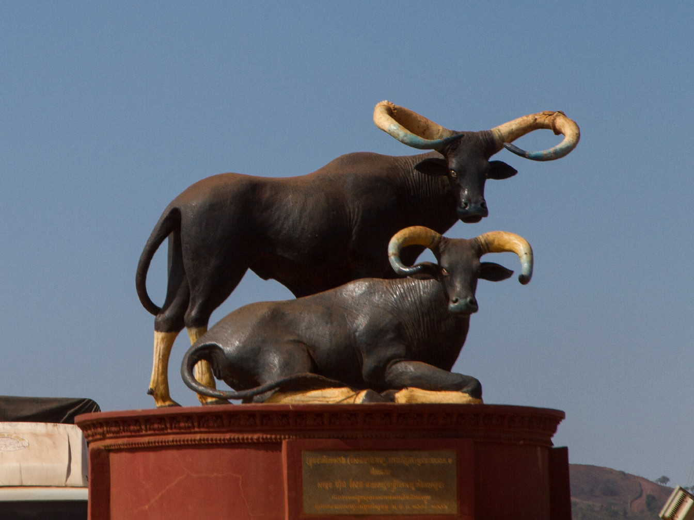

ការពិពណ៏នាអំពី ខេត្តនីមួយៗនៅក្នងប្រទេសកម្ពុជា
ទំព័រដើម
តាកែវ
ភ្នំពេញ
កែប
ព្រះសីហនុ
ស្វាយរៀង
កំពង់ធំ
បាត់ដំបង
ពោធ៏សាត់
សៀមរាប
រតនគីរី
មណ្ឌលគីរី
ក្រចេះ
ត្បូងឃ្មុំ
កំពង់ចាម
ព្រៃវែង
កណ្តាល
ឧត្តរមានជ័យ
កំពង់ឆ្នាំង
កំពង់ស្ពឺ
បន្ទាយមានជ័យ
កោះកុង
ប៉ៃលិន
កំពត
ស្ទឹងត្រែង
ព្រះវិហារ
ទំនាក់ទំនង
ខេត្តមណ្ឌលគីរី

ព័ត៌មានសង្ខេបអំពីខេត្តមណ្ឌលគីរី
> ខេត្តមណ្ឌលគីរី ជាខេត្តស្ថិតនៅភាគខាងកើតប្រទេសកម្ពុជា។ ខេត្តនេះមានផ្ទៃដីធំជាងគេ តែមានប្រជាជនតិចជាងគេ។ ទីរួមខេត្តឈ្មោះក្រុងសែនមនោរម្យ។ ខេត្តមណ្ឌលគីរីជាតំបន់ទេសចរណ៏ធម្មជាតិធំមួយនៃព្រះរាជាណាចក្រកម្ពុជា ដែលមានតំបន់ទេសចរណ៏ធម្មជាតិជាច្រើនដូចជាទឹកជ្រោះប្រកបដោយហ្វូងមច្ឆាជាច្រើនប្រភេទ ព្រមទាំងរុក្ខជាតិ សត្វព្រៃ ព្រៃកោងកាង និងភ្នំតូចធំជាច្រើន។
> ខេត្តមណ្ឌលគីរីជាខេត្តមួយដែលសិ្ថតនៅភូមិភាគឦសាននៃប្រទេសកម្ពុជា ហើយមានចំងាយ ៣៨២គីឡូម៉ែត្រពីរាជធានីភ្នំពេញ និមិត្តសញ្ញានៃខេត្តគឺតំណាងអោយសត្វគោព្រៃ ដែលជាថនិកសត្វជាតិរបស់កម្ពុជា។ចំពោះចំនួនប្រជាពលរដ្ឋសរុបនៅក្នុងខេត្តមណ្ឌលគិរីគឺ៩៣,៤៤១នាក់ ដែលស្មើនឹង២២,២២០គ្រួសារដែលមានដង់ស៊ីតេ ៧នាក់ក្នុងមួយគីឡូម៉ែត្រ។ ប្រជាពលរដ្ឋដែលជាជនជាតិដើមភាគតិចនៅទូទាំងខេត្តសរុបមានចំនួន ៥៣,៤៤៤នាក់ ស្មើនឹង៥៧,២០ភាគរយ នៃប្រជាជនសរុប ដែលមាន ៨ជនជាតិ ក្នុងនោះរួមមាន៖ជនជាតិព្នង ក្រោល គ្រឹង ស្ទៀង ទំពួន ចារាយ ថ្មួន និងកួយ។[២]
> ខេត្តមណ្ឌលគីរី មានចំនួន ៥ ស្រុក និង ១ ក្រុង :
- ស្រុកកោះញែក
- ស្រុកកែវសីមា
- ស្រុកពេជ្រមនជ័យ
- ស្រុកអូររាំង
- ស្រុកស្នួល
- ក្រុងសែនមនោរម្យ